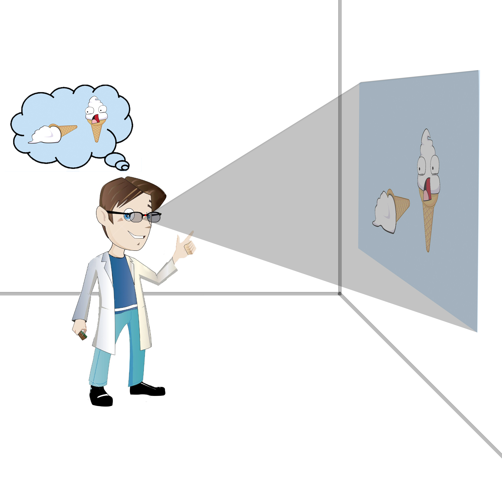
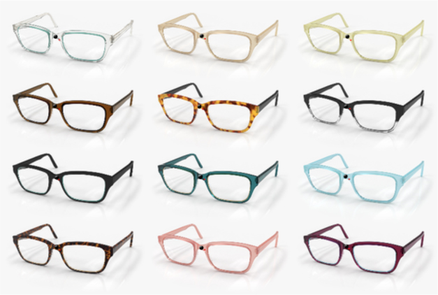
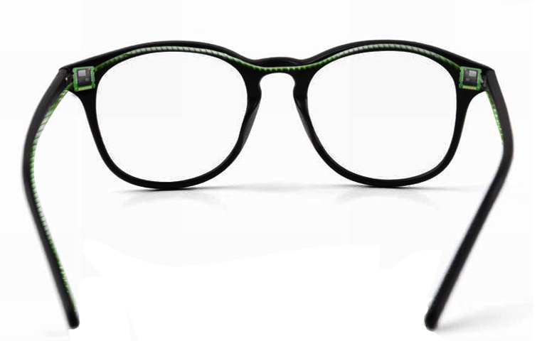
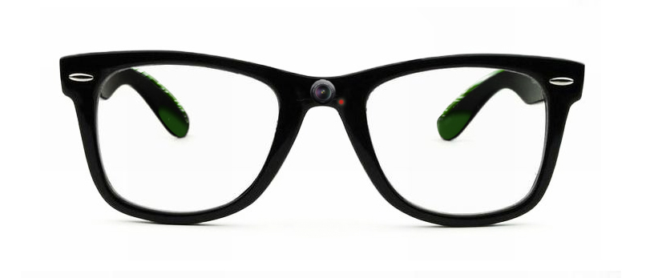
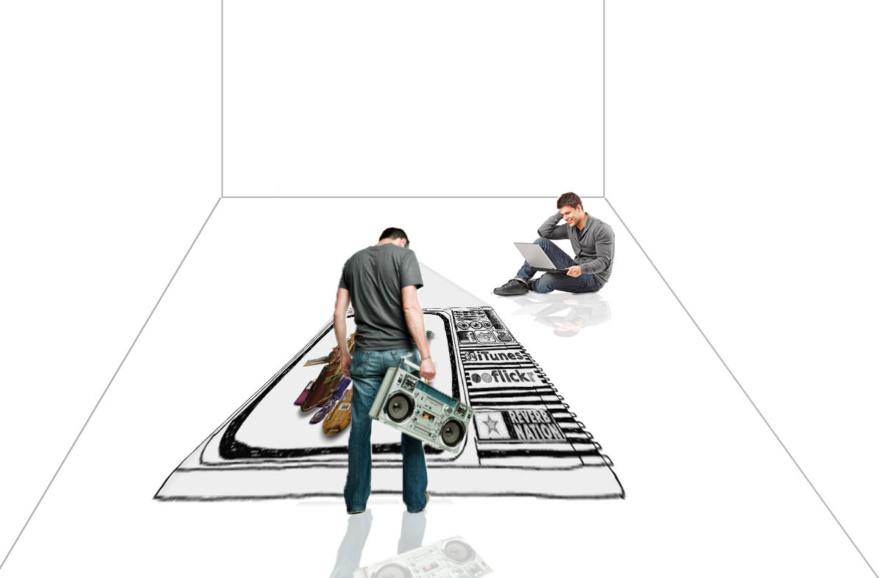
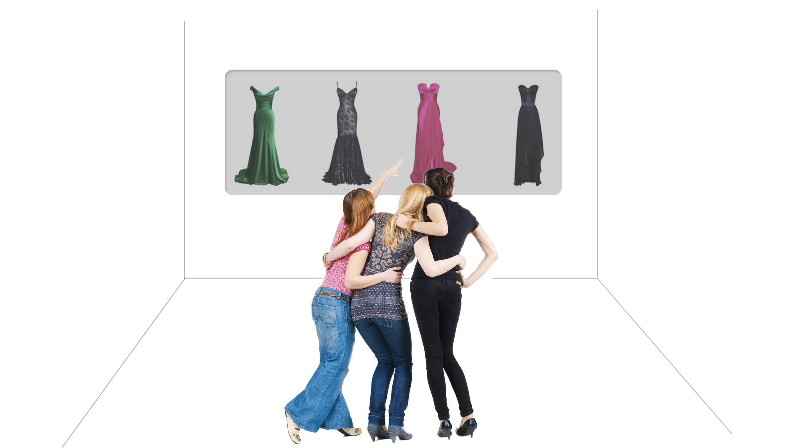
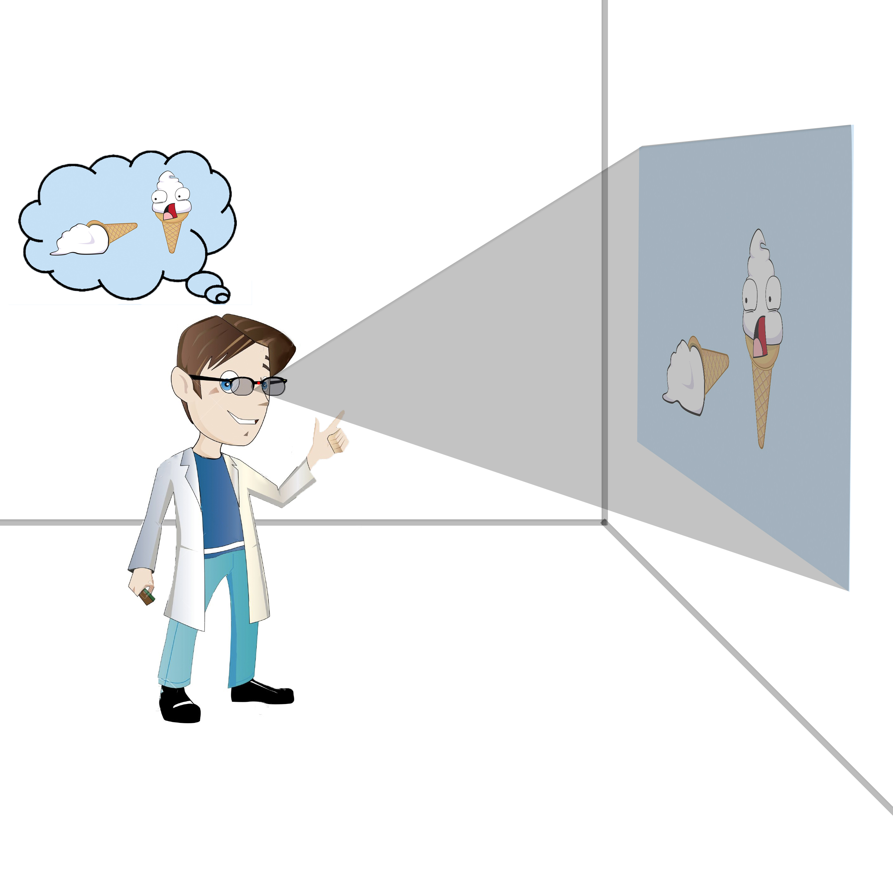
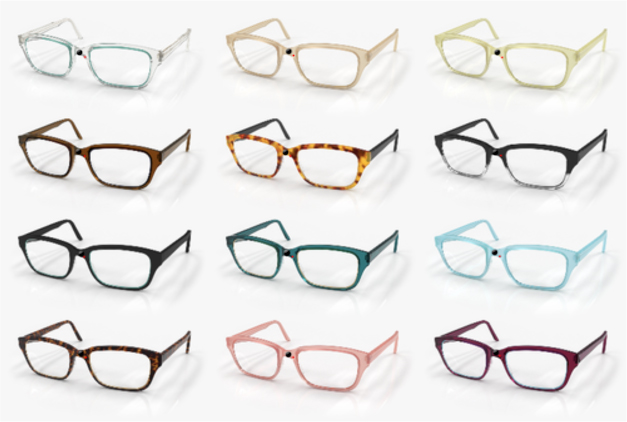
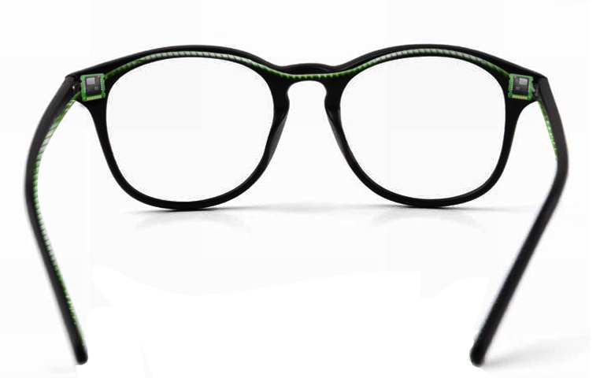
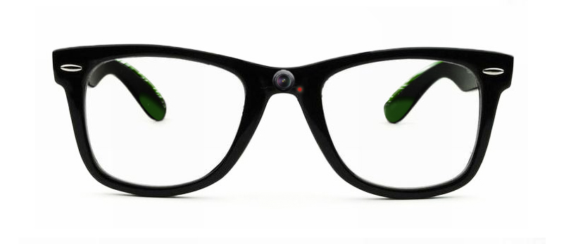
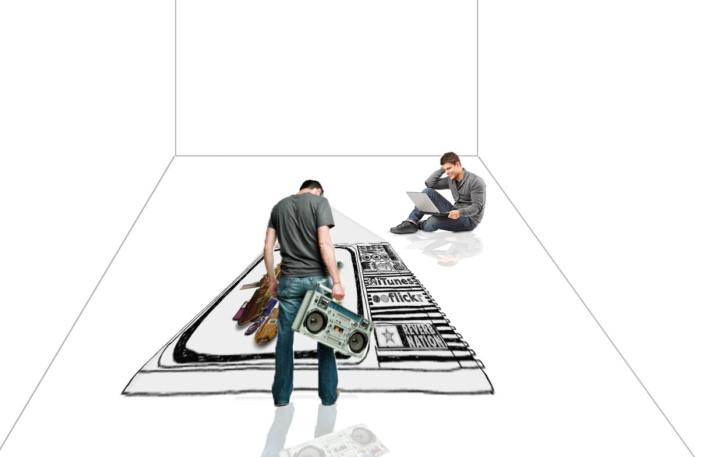
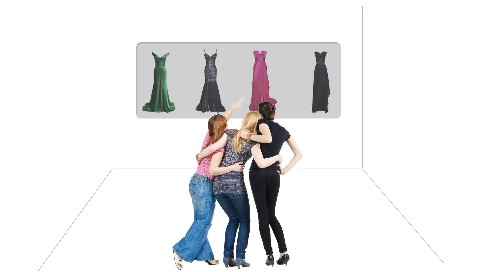
A visionary project that I created at during my time at NYU. We were challenged by our professors to present a futurisitic concept to solve communication problems.
Have you ever sat there and struggled describing the dress you just bought to your friends? Or maybe you had difficulty clarifying to your mother what sweater went missing when she did the washing? When I find myself in situations where I cannot accurately explain the image in my head, I sit there wishing there was a way of taking that picture from my head and sharing it with those around me. The rare few who have artistic talents can pull out a piece of paper and draw a more accurate image of their thoughts. But what about those who can’t draw? Are they being denied the ability to share their thoughts more clearly?
With SPECS anyone is able to share images from their head with a click of a button. The glasses, aesthetically, are just like any other pair of spectacles. However, attached to the temple tips are magnetoencephalography(MEG) which record and transmit the magnetic fields in the brain to the processors that can be located next to the end pieces.
When the individual wants to save his or her thoughts the glasses work somewhat like a camera; with a click of a button the user is able to capture an image or video that takes place inside his or her brain. He/she can either chose to display the image automatically via a tiny projector located at the bridge of the glasses or send the image to their email. In order to make the thoughts inaccessible without the permission of the user, the user must think of their password before working the device. The concept of reading the brain might seem like a far-fetched idea. However, machines that can read people's minds are getting closer to reality. With brain scanners, scientists have been able to read letters and images participants are viewing.
The results come from two studies, both detailed in the journal NeuroImage, that suggest machines could be taught to peer inside the mind to "see" pictures of what people see in near real time.
SPECS merely sees this advancement in technology and is conceptulizing a use for it in society. Here are three situations in which the glasses maybe used:
“Molly went on a date last night with a new guy called Jacob. The next morning she goes to coffee with her friends. They ask her many questions about how last night went. Most importantly, they want to know what the new guy looks like so Molly pulls up facebook to show them. Sadly, Jacob has a very private profile on facebook and does not show any images of himself. She tries to describe him but he sounds like just any other guy with brown hair and blue eyes. Using the SPECS glasses she is able to project an image of Jacob from last night onto the coffee table so all her friends can see what he looks like.”
“Mathew needs to build a website for his company however, he does not know how to code. He therefore, hires a programmer, but the guy has no experience in design. Matthew does not know how to use photoshop and consequently needs to hire a graphics designer to help him translate his ideas to the coder. By using the SPECS glasses he is able to take snapshots of what he wants his companies website to look like and send them to the coder without having to involve a graphics designer.”
“Ben works for a marketing firm. They are coming up with advertising concepts for the ___ Olympics. Ben has some ideas but when he tries to describe them they get lost in translation. He wants to draw them but lacks the skills. The company has to hire an artist to draw mock ups of Bens ideas which turn out to be far from accurate. However, just because Ben cannot draw it does not mean he is not an artist. Ben has a creative mind and with the help of SPECS glasses he is able to take a photo of the concept in his head and project it on the white wall for all his colleagues to view.”
“Sally was walking down 5th Avenue this morning when a young man robbed her. She was taken down to the police station to give a description of the thief. Usually victims would have repeat what happened numerous times to the police officer to and verbally describe the mugger to an (artist) who draws a vague outline of the attacker. However, with the SPECS glasses Sally is able to close her eyes and replay the incident in her head, she can then send or play the video to the police officer automatically. This saves her and the police officer time and give the station a more accurate description of the encounter allowing them to do a better job at locating the suspect.”
Sometimes words aren’t enough to describe our thoughts. Everyone has different connotations to a word. For example when I asked 3 people to think of a forest and then asked them to get a photo from the Internet of the closest looking image to their thoughts. All three individuals pulled up very different pictures. One had a gloomier image while the other was more positive; the final individual incorporated a small wooden house into the image. Therefore, having an artist/friend to depict the images in your head can leave room for interpretation and error.
However, there are of course disadvantages to this advancement in technology. The number one issue would be the fact that this brain scanning technology could allow for a breach in privacy. Currently, the only private location to store information that we know for sure no one has the access code or key to is in our heads. Giving people a technology that allows them access to this secret portal without consent can be a violation of privacy.
Not only will it be a violation of privacy but it also could be dangerous for society. People will be able to extract through an individual, important, secure and confidential information of individual, state or even country.
In addition, there is a fear that people will confuse the thoughts in our head for reality. For example, in situation 4, the replay of the robbery scene created by Sally could potentially be entirely made up and not necessarily true. So we must ensure we maintain a divide between thoughts and reality.
There will also be less demand for artists in work places, which will cause a large increase in unemployment. Furthermore, we will become lazy in using words and practicing artistic skills to explain ideas. But do we necessarily need those assets anyway?
SPECS glasses will allow all people across the world to save and share their thoughts with friends, family and colleagues. We acknoledge that it will lead to a lack of demand of illustrators however, this loss can be outweighed by the fact that everyone now has the ability to be an artist and art will be more about the idea then the skill. There will be issues when it comes to privacy however, the technology is already going to be released to the world so we might as well put it to a good use that will benefit the country.